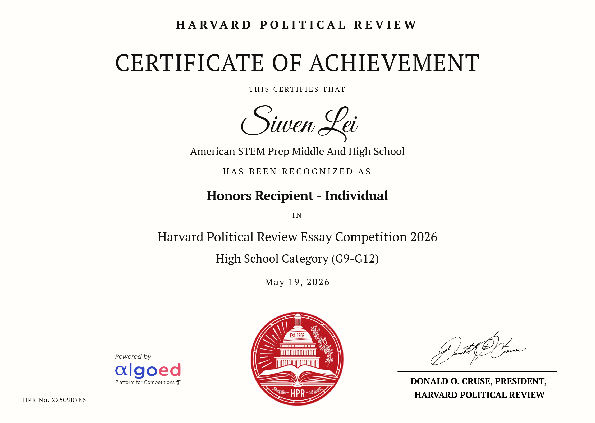

Official Certificates
Verification of Credentials
Official award credentials uploaded for verification archives.


Part I: Official Recognition & Awards
Competition Overview
The Harvard Political Review Essay Competition is a premier global forum challenging high school intellects to critically evaluate shifting political landscapes, global public policies, and international macroeconomic forces. Submissions are judged rigorously by the editorial staff of the publication based on original analytical depth, cohesion, and policy insight.
Accolades Earned
Ranked #1 Nationally in the Republic of Korea category. Demonstrated high-tier collaborative research and structured policy evaluation framework.
Individual recognition for exceptional writing, analytical rigor, and individual mastery of global policy dynamics.
Admissions & Analytical Alignment
This achievement serves as verification of elite academic capacity, validating key skill sets crucial for university-level financial and corporate policy tracks:
- Macroeconomic Logic: Synthesizing real-world structural changes with academic economic theories.
- Global Perspective: Evaluating regional and cross-border socio-political risks that directly interact with asset valuations and capital markets.
- Communication Clarity: Expressing sophisticated, multifaceted institutional arguments clearly and persuasively.
"Verified under official 2026 judging criteria, recognizing top-tier collaborative and independent academic writing parameters."
Part II: Essay Manuscript
What do institutions of higher education like Harvard mean to international students who want to pursue better opportunities and seek a brighter future? According to the Institute of International Education, U.S. colleges and universities hosted 1.2 million international students in the 2024–2025 academic year, representing a 5% overall increase from the previous year (Institute of International Education, 2025). As the Trump administration introduces policies that restrict many international students, it incurs not only a massive financial loss to countless domestic institutions but also an irreversible setback to international academic development. These protectionist actions act as an informal mechanism, forcefully amalgamating partisan politics into the sanctuary of academics. Consequently, the administration's behavior engenders latent systemic risks for international cooperation and actively impedes global scholars pursuing absolute academic freedom.
Despite critics arguing that international students, particularly those from China, enter elite institutions to misappropriate advanced technology, it is simultaneously evident that foreign countries have long established reciprocal, high-tier international pipelines for United States citizens. The White House, via official fact sheets, has repeatedly claimed that an abundance of foreign actors leverage academic enrollment for corporate and technological espionage. Specifically, documentation notes that "Harvard has also developed extensive entanglements with foreign adversaries, receiving more than $150 million from China alone. In exchange, Harvard has, among other things, hosted Chinese Communist Party paramilitary members and partnered with China-based individuals on research that could advance China’s military modernization."
Nevertheless, top-tier global institutions such as Tsinghua University in the People’s Republic of China have fundamentally matched these pathways by sustaining robust international study programs. Foreign students are granted targeted access to participate in some of the most advanced technical operations globally; according to U.S. News & World Report, Tsinghua University is ranked first globally in both materials science and artificial intelligence (U.S. News & World Report, 2025). In our modernized, tech-driven landscape where AI is an imperative pillar of daily human life, these programs serve as vital mutual accelerators. By purposefully targeting global talent alongside local cohorts, institutions like Tsinghua foster collective development. In sharp contrast, the executive proclamation to heavily restrict international scholars functions as a sign of excessive politicization, chilling cross-border educational exchanges and damaging key foreign relationships to the point where future models may see isolated, purely domestic enrollments.
Furthermore, federal narratives have extended to accuse international students of driving cultural polarization and fostering hostility on American campuses, notably concerning the targeted persecution of Jewish students at Harvard University. A White House fact sheet asserted that Harvard failed to adequately mitigate volatile anti-Semitic incidents, pointing out that many disruptive agitators were foreign nationals (White House Fact Sheet, 2024). While discrimination on college campuses remains an institutional crisis, international students are far from the structural source of these deep-rooted prejudices. Empirical data from the Centers for Disease Control and Prevention reveals that discrimination is an expansive, pervasive problem experienced long before higher education.
According to the CDC's Youth Risk Behavior Survey, an alarming 31.5% of high school students nationwide reported experiencing racism within educational spaces. When disaggregated by demographic cohorts, the prevalence of experiencing racism was 56.9% among Asian students, 48.8% among multiracial students, 45.9% among Black students, 39.4% among Hispanic students, 38.0% among American Indian/Alaska Native (AI/AN) students, 37.6% among Native Hawaiian/Other Pacific Islander (NH/OPI) students, and 17.3% among White students (Centers for Disease Control and Prevention, 2023). This statistical reality confirms that racial prejudice is a systemic, domestic problem spanning all racial groups, meaning international students are often the targeted victims rather than the source. Rather than scapegoating foreign scholars, federal policy must address domestic racism and structural prevention frameworks.
Additionally, while critics claim that students involved in anti-war demonstrations over the Gaza conflict infringe upon the equal rights of Jewish students, local reporting demonstrates a much more nuanced landscape where Jewish scholars themselves are actively leading calls for cross-border empathy. Documented accounts from The Harvard Crimson show students standing at the base of Widener Library's steps in structured, silent protest for hours, hoisting banners reading "Jews Against Zionism" and "The Holocaust Does Not Justify the Nakba" (The Harvard Crimson, 2024). These student actions embody the true essence of academic freedom: the protected capacity to repudiate institutional dogma, criticize structural power, and show global humanitarian sympathy. Labeling foreign scholars as an inherent threat relies on invalid stereotypes rather than objective, localized realities.
Ultimately, these politically motivated restrictions threaten to cause an enduring, irreversible collision between the American educational engine and global academic liberty. Despite historically serving as the world's primary destination for international scholars, tighter visa thresholds run the risk of crippling incoming immigration pipelines. The compounding, long-term impact will be a severe contraction of highly educated minds entering the domestic workforce, bottlenecking innovation inside artificial domestic boundaries instead of elevating global scientific progress. This shift has raised immense concern among domestic educators; a growing number of members of the American Association of University Professors fear the direct consequences of expressing independent political viewpoints or executing research disfavored by the state (Zurcher, BBC News, 2024). By focusing on short-term political posturing, state policies undermine the fundamental immigration dynamics that built the nation's intellectual capital, creating an environment fundamentally detrimental to long-term national development.